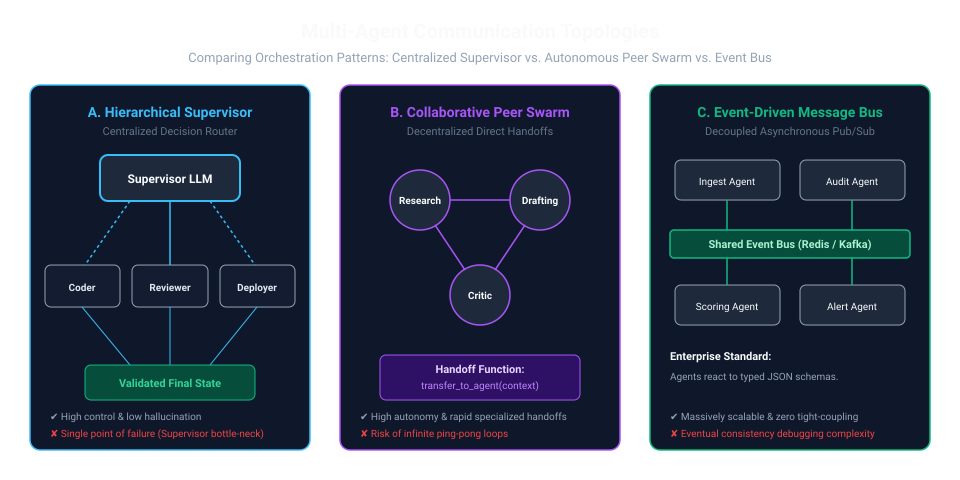
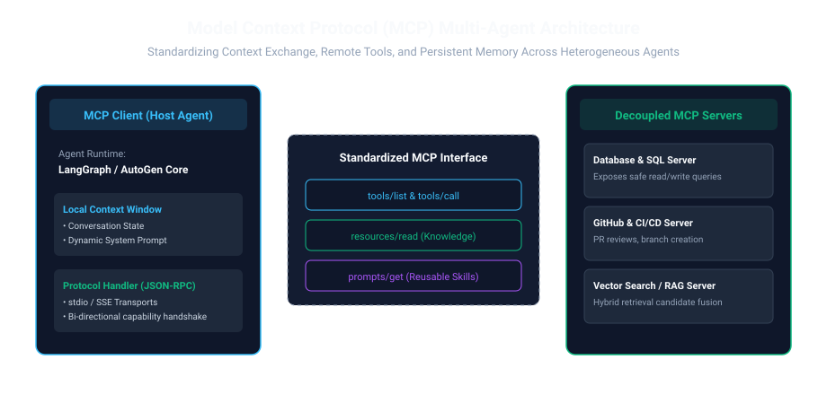

1. The Death of the "God Prompt" Agent
When AI teams begin building agentic applications, the initial impulse is almost universal: write a monolithic 3,000-word system prompt, arm the model with 35 distinct function definitions (search, calculator, database writer, email client, git commit), and pray the LLM figures out what to do.
In production, this pattern collapses catastrophically. As tool counts exceed 10–15 functions, LLM attention mechanisms degrade. The model suffers from "Tool Hallucination" (inventing nonexistent JSON arguments), misidentifies parameter types, or picks suboptimal tools because prompt instruction boundaries bleed together.
The fundamental law of distributed software applies to AI agents as well: single-responsibility components scale; monolithic God objects do not. A production multi-agent system (MAS) partitions complex business objectives across specialized autonomous nodes, each equipped with dedicated system prompts, constrained toolsets, and clean state boundaries.
Imagine walking into a Michelin-starred restaurant kitchen. You don't see a single superhero cook trying to bake bread, butcher beef, sauté scallops, whip soufflés, and wash dishes simultaneously. If one person tried, dinners would burn and service would halt.
Instead, you see the Classical French Brigade:
- The Executive Chef (Supervisor Agent): Reads customer orders, coordinates timing, delegates plates, and performs final quality checks.
- The Saucier (Worker Agent 1): Specializes exclusively in pan sauces and reductions. Has 4 specific pans (tools) and nothing else.
- The Pastry Chef (Worker Agent 2): Operates in a cold room, mastering ovens and confectioneries without getting distracted by meat orders.
A Multi-Agent System organizes AI the exact same way: narrow specialized agents doing one job flawlessly under an orchestrator's oversight.
2. Architectural Topologies: Supervisors, Swarms, and Event Buses
How should agents talk to each other? The industry has converged on three distinct communication topologies, each engineered for specific trade-offs between centralized determinism and autonomous flexibility:

| Topology | Coordination Model | State Sharing | Best Fit For |
|---|---|---|---|
| Hierarchical Supervisor | Central LLM routes tasks to subagents and validates results before proceeding. | Centralized typed graph state (e.g. LangGraph AgentState). |
Enterprise workflows with strict compliance, legal approvals, and bounded budgets. |
| Collaborative Peer Swarm | Decentralized handoff functions; any agent can invoke another peer directly. | Contextual message history appended through tool calls. | Open-ended creative brainstorming, exploratory research, and interactive simulations. |
| Event-Driven Pub/Sub | Decoupled message queues (Kafka / Redis); agents publish events when tasks conclude. | Immutable JSON payload envelopes across event topics. | High-throughput batch processing, asynchronous background indexing, and distributed microservices. |
3. Mathematical Formalization of Hierarchical Orchestration
Let us formalize the Supervisor orchestration process as a discrete finite state machine $(\mathcal{S}, \mathcal{A}, \mathcal{T}, \mathcal{O})$:
Where:
- $\mathcal{S}_t$: The comprehensive global execution state at turn $t$ (user query, intermediate artifacts, message history).
- $\mathcal{A}_t$: The action chosen by the supervisor: either routing to a subagent $w_i \in \mathcal{W}$ or concluding with final response $\text{END}$.
- $\mathcal{G}_{\text{goal}}$: The overarching user objective.
- $\mathcal{T}$: The transition function that updates state with subagent output: $\mathcal{S}_{t+1} = \mathcal{S}_t \oplus \text{Output}(w_i)$.
User Objective: "Analyze competitor XYZ's latest quarterly pricing changes and update our revenue forecast spreadsheet."
- Turn 1 (Supervisor): Evaluates goal. Decomposes task into sub-goals. Routes to
Research_Agentwith query: "Competitor XYZ Q3 pricing updates". - Turn 2 (Research Agent): Executes search tools, retrieves pricing PDF, extracts tier tables, returns clean Markdown summary to Supervisor.
- Turn 3 (Supervisor): Evaluates research artifact. Validates completeness. Routes to
Financial_Modeler_Agentwith extracted numbers + historical spreadsheet context. - Turn 4 (Modeler Agent): Executes Python pandas script in sandbox, computes new projected growth, returns updated numbers.
- Turn 5 (Supervisor): Synthesizes final comprehensive briefing for the user and terminates at
END.
Result: Zero tool overlap. Neither worker agent had access to the other's internal tools or prompt context, ensuring maximum precision and zero context contamination.
4. Standardizing Agent Tooling: The Model Context Protocol (MCP)
Until recently, every multi-agent framework implemented its own proprietary tool interface. If you wrote a PostgreSQL query tool for LangChain, you had to rewrite it from scratch for AutoGen, CrewAI, or custom Python agents.
In late 2024, Anthropic open-sourced the Model Context Protocol (MCP) — an open standard (analogous to the Language Server Protocol / LSP for IDEs) that decouples agent hosts from tool and context providers over standardized JSON-RPC 2.0 messages.

Under MCP, tools are isolated micro-servers that expose three fundamental primitives:
- Resources: File-like data streams that can be read by clients (e.g. database records, API logs, local file buffers).
- Prompts: Pre-packaged, parameterized prompt templates that guide agents on domain-specific best practices.
- Tools: Executable functions with formal JSON-schema arguments that perform actions (e.g. running queries, writing code, dispatching webhooks).
Why should engineering teams standardize on MCP over custom Python functions?
- Process Isolation: An MCP tool server runs in its own process or container (communicating via
stdioorSSE). A crashing tool cannot crash the agent runtime. - Security Boundaries: Sensitive credentials (database passwords, API secrets) live exclusively inside the MCP server process. The LLM host never touches the raw credentials — it only receives the executed result.
- Zero Framework Lock-In: The exact same MCP server can be queried interchangeably by Claude Desktop, Cursor, LangGraph, or custom agent scripts.
5. Production Implementation: LangGraph Hierarchical Supervisor
Here is a fully runnable production implementation of a Hierarchical Multi-Agent Supervisor using LangGraph and Pydantic structured output routing:
from typing import TypedDict, Annotated, Sequence, Literal
import operator
from pydantic import BaseModel, Field
from langgraph.graph import StateGraph, END
from langchain_core.messages import BaseMessage, HumanMessage, AIMessage
# 1. Define Global Shared Multi-Agent State
class MultiAgentState(TypedDict):
messages: Annotated[Sequence[BaseMessage], operator.add]
next_worker: str
intermediate_data: dict
# 2. Structured Output Schema for Supervisor Routing Decision
class SupervisorRouting(BaseModel):
next_step: Literal["research_worker", "code_worker", "FINISH"] = Field(
description="The next specialized worker to delegate to, or FINISH if the user request is resolved."
)
delegation_instruction: str = Field(
description="Specific, unambiguous instruction for the delegated subagent."
)
# 3. Supervisor Orchestration Node
def supervisor_node(state: MultiAgentState) -> dict:
last_msg = state["messages"][-1].content
# Deterministic mock routing demonstration (in prod, use llm.with_structured_output(SupervisorRouting))
if "research" in last_msg.lower() and "research_done" not in state.get("intermediate_data", {}):
return {"next_worker": "research_worker"}
elif "code" in last_msg.lower() and "code_done" not in state.get("intermediate_data", {}):
return {"next_worker": "code_worker"}
return {"next_worker": "FINISH"}
# 4. Specialized Worker 1: Research Agent
def research_worker_node(state: MultiAgentState) -> dict:
result = "Market Research Report: Vector DB enterprise market grew 48% YoY in 2025."
data = state.get("intermediate_data", {})
data["research_done"] = True
return {
"messages": [AIMessage(content=f"[Research Agent] Completed: {result}")],
"intermediate_data": data
}
# 5. Specialized Worker 2: Code Execution Agent
def code_worker_node(state: MultiAgentState) -> dict:
code_result = "Python Benchmark: MaxSim late-interaction achieved 12ms P95 latency."
data = state.get("intermediate_data", {})
data["code_done"] = True
return {
"messages": [AIMessage(content=f"[Code Agent] Executed: {code_result}")],
"intermediate_data": data
}
# 6. Build the StateGraph
workflow = StateGraph(MultiAgentState)
workflow.add_node("supervisor", supervisor_node)
workflow.add_node("research_worker", research_worker_node)
workflow.add_node("code_worker", code_worker_node)
workflow.set_entry_point("supervisor")
workflow.add_conditional_edges(
"supervisor",
lambda s: s["next_worker"],
{
"research_worker": "research_worker",
"code_worker": "code_worker",
"FINISH": END
}
)
# Subagents always report back to the supervisor for validation
workflow.add_edge("research_worker", "supervisor")
workflow.add_edge("code_worker", "supervisor")
app = workflow.compile()
6. Production Architecture Decision Matrix
When should you actually pay the latency and token overhead of a multi-agent system versus keeping a single agent? Use this engineering rule of thumb:
| Workflow Property | Single-Agent Architecture | Multi-Agent Architecture (MAS) |
|---|---|---|
| Tool Complexity | < 8 tools with orthogonal parameters | > 10 tools, or tools requiring mutually exclusive permissions |
| Evaluation & Auditing | Single output is inspected as one block | Sub-tasks must be independently evaluated and gated by humans |
| Context Volume | Context comfortably fits in < 8,000 tokens | Context exceeds 50,000 tokens across disparate domains (code, PDF, web) |
| Token Cost & Latency | Lowest cost; single inference loop | Higher token footprint; justified only by high task completion stakes |